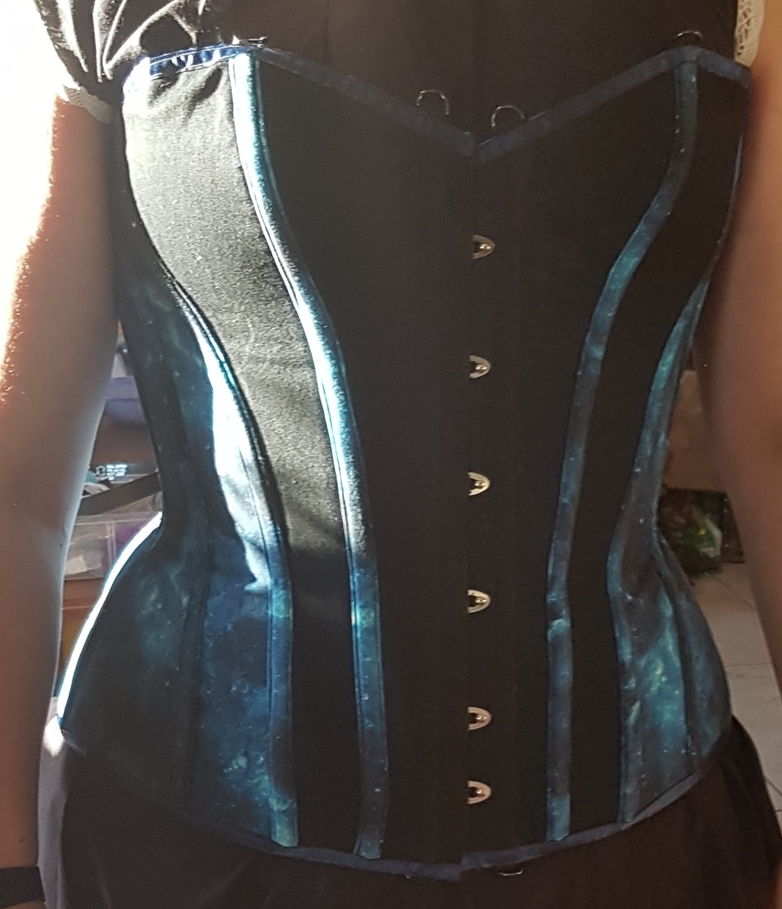
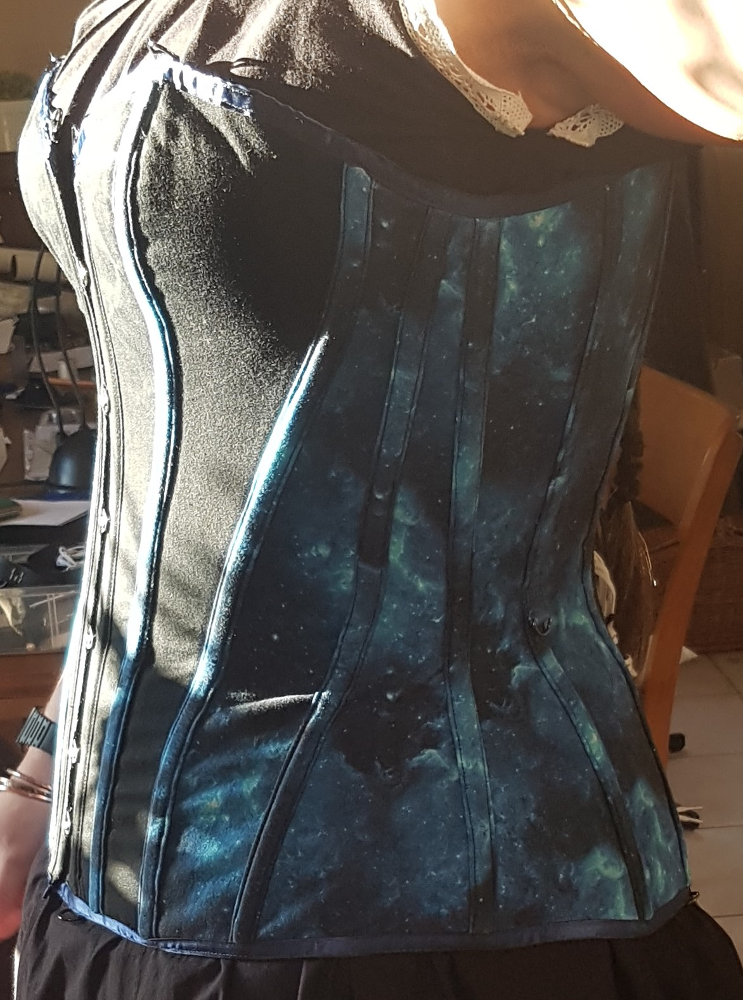
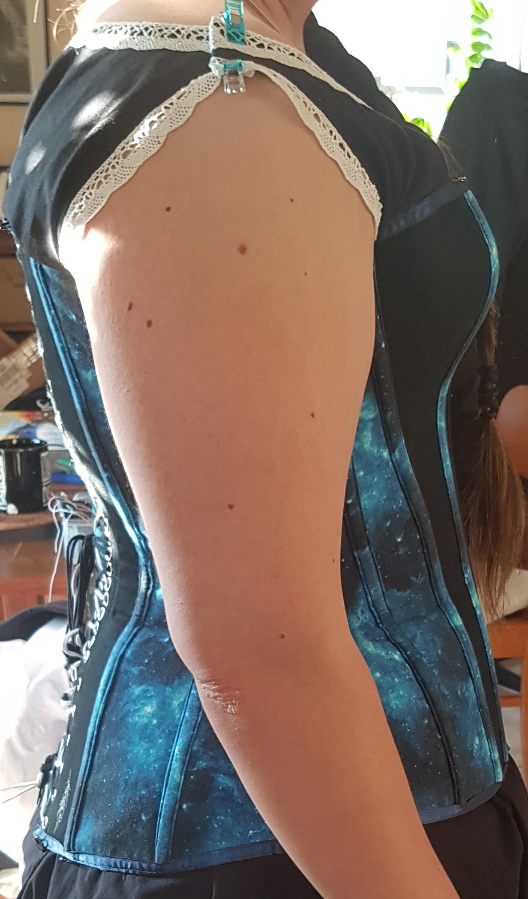
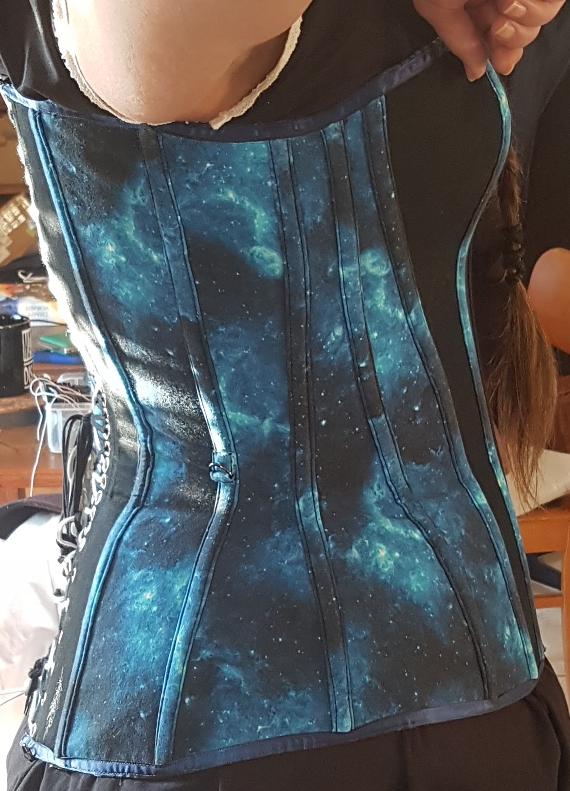
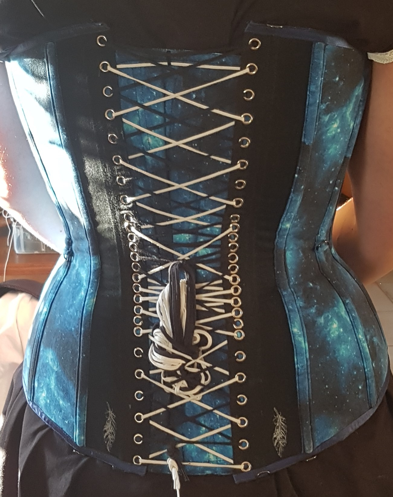
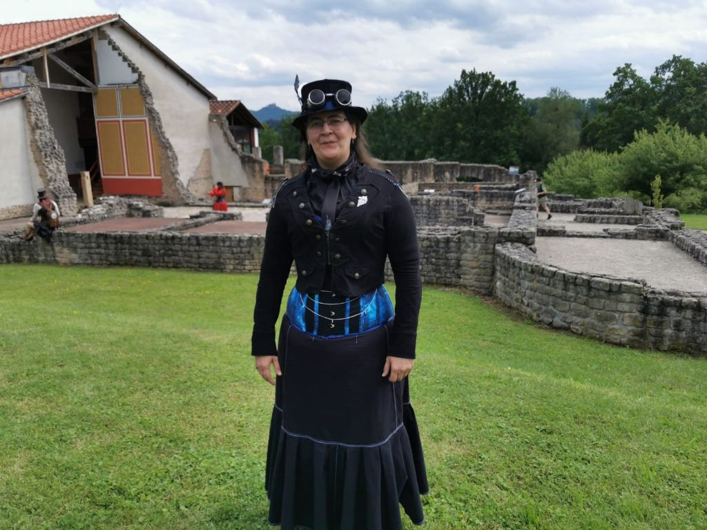

Universums Korsett
Das Universums Korsett war das zweite selbst genähte Korsett. Basiert auf dem Schnittmuster "Sylvia" (Überbrustkorsett) von
Aranea Black. Leider gibt es inzwischen weder Ihre Website noch Ihren Youtube Kanal. Sehr Schade.
(Klick auf die Bilder öffnet diese in Originalgröße in einem neuen Tab/Fenster im Browser.)

Frontansicht des Universum Korsetts.

Seitenansicht von Links.

Seitenansicht von Rechts mit dem Arm oben.

Seitenansicht von Rechts mit dem Arm normal.

Die Doppelschnürung des Korsetts. Schwarzes und Weisses Band im wechsel.

Hier trage ich das Korsett über einem Rock. Durch die Bolero Jacke im Militär Stil und dem selbstgenähtem Zylinder bekommt
das ganze Outfit einen Steampunk touch. DieSeifenblasen sind bei einer Silvester-Party entstanden, an die ich mich gerne
Erinnere.

Hier das Korsett in ähnlichem Outfit mit den Seifenblasen. Der Rock ist nach einem Unterrock Schnittmuster entstanden mit
weissen Doppelnähten (Zwillingsnadeln mit der Nähmaschine). Das Foto ist im Freilichtmuseum
Villa Rustica Hechingen/Stein entstanden.